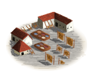
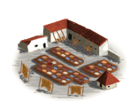
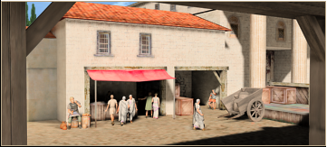
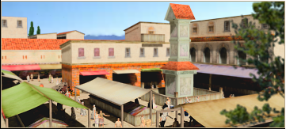

RTR: Imperium Surrectum
RTR: Imperium SurrectumHides Industry
4 levels, each replacing the one before it — you upgrade in place rather than building alongside.
Tannery (Urban) → Leatherworker (Urban) → Parchment Maker (Urban) → Parchment Exports (Urban)
Levels at a glance
| Level | Cost | Build time | Minimum settlement | Upgrades to | Level | Cost | Build time | Minimum settlement | Upgrades to | ||
|---|---|---|---|---|---|---|---|---|---|---|---|
| Tannery (Urban) | 800 | 2 | large town | Leatherworker (Urban) | Leatherworker (Urban) | 2,000 | 3 | city | Parchment Maker (Urban) | ||
 | Parchment Maker (Urban) | 7,500 | 6 | large city | Parchment Exports (Urban) |  | Parchment Exports (Urban) | 12,500 | 10 | huge city | — |
Costs in denarii, build time in turns.
Tannery (Urban)

Turning hides into leather and holding our noses.
The Tannery, a place of mysterious alchemy where raw hides transform into the leather that soldiers, citizens, and craftsmen prize.
The process may be laborious and smelly, but the results are steady. Indeed, it's not for the faint of nose, the tannery is home to the toughest workers, who endure strong smells and even stronger personalities to deliver leather that’s both supple and durable.
This is where hides lose their former life and gain new purpose.
| Cost | 800 denarii | Build time | 2 turns | Minimum settlement | large town | Upgrades to | Leatherworker (Urban) |
Requirements — all of these must hold before this level can be built.
- any faction
- Local Market at Local Barter or above is built here
- the region does not have the hidden resource
nobuild(nobuilding) - the region has the livestock resource
- no building tagged
urban_exploitsis built or queued here (no_other_urban_exploits) - Government Building
Show the condition as the game files write it
factions { all, } and building_present_min_level market trader and nobuilding and resource livestock and no_other_urban_exploits and requires_gov
What it does
- +8 taxable income
- -1 public order (happiness) (player only)
Show 1 effect that apply only in the circumstances shown
- -1 public order (happiness) — only when
building_present_min_level hides_industry hides_1 and not is_player
Leatherworker (Urban)

Armour so flexible, you might forget you’re at war.
In the Leatherworkers shop the leather produced by the tannery gets made into usefull goods, like clothing, boots, and the sturdy straps that tie everything in ancient life together.
Here, artisans balance strength and flexibility, fashioning armour that can withstand a blow but still allow a warrior to dash, dodge, or (ideally) parade in victory.
Every suit of leather armour is a testament to craftsmanship and the notion that speed beats heavy metal.
| Cost | 2,000 denarii | Build time | 3 turns | Minimum settlement | city | Upgrades to | Parchment Maker (Urban) |
Requirements — all of these must hold before this level can be built.
- any faction
- Local Market at Local Market or above is built here
- the region does not have the hidden resource
nobuild(nobuilding) - the region has the livestock resource
- Government Building
Show the condition as the game files write it
factions { all, } and building_present_min_level market market and nobuilding and resource livestock and requires_gov
What it does
- +12 taxable income
- +1 trade income
- -1 public order (happiness) (player only)
Show 1 effect that apply only in the circumstances shown
- -1 public order (happiness) — only when
building_present_min_level hides_industry hides_2 and not is_player
Parchment Maker (Urban)

Where hides and history meet in thin sheets.
At the Parchment Maker’s, hides are transformed into delicate sheets upon which history is written.
This is where cows and goats make their unlikely contribution to knowledge itself.
The process may be laborious, but the results endure far beyond leather sandals or wine skins, becoming pages that record the wisdom of philosophers, the commands of generals, and the scribbles of lovestruck poets.
| Cost | 7,500 denarii | Build time | 6 turns | Minimum settlement | large city | Upgrades to | Parchment Exports (Urban) |
Requirements — all of these must hold before this level can be built.
- your faction is one of 14 factions, listed in the condition below (
advanced_crafts_factions) - Local Market at Forum or above is built here
- the region does not have the hidden resource
nobuild(nobuilding) - the region has the livestock resource
- Small School (Civic) at Small School (Civic) or above is built here
- Government Building
Show the condition as the game files write it
advanced_crafts_factions and building_present_min_level market forum and nobuilding and resource livestock and building_present_min_level academic academy and requires_gov
What it does
- +18 taxable income
- +2 trade income
- +1 public order (law)
- -1 public order (happiness) (player only)
Parchment Exports (Urban)

Where thoughts become scrolls and wisdom lives on (for a price).
As there never seems to be enough papyrus available, scholars and scribes have been gathered to turn parchment into the repository of civilization’s brightest (and sometimes strangest) ideas.
Scrolls crafted here hold the decrees of kings, the philosophies of sages, and sometimes the gossip of the streets. Whether it’s recording victories or translating epics, the Parchment Complex ensures that fleeting thoughts are preserved, just as long as the ink doesn’t smudge. As
| Cost | 12,500 denarii | Build time | 10 turns | Minimum settlement | huge city |
Requirements — all of these must hold before this level can be built.
- your faction is one of 14 factions, listed in the condition below (
advanced_crafts_factions) - Local Market at Large Forum or above is built here
- the region does not have the hidden resource
nobuild(nobuilding) - the region has the livestock resource
- Small School (Civic) at Academy (Civic) or above is built here
- Direct Rule or Homeland
- anywhere in your empire does not have the hidden resource
hides_supply_built(not_hides_supply_built)
Show the condition as the game files write it
advanced_crafts_factions and building_present_min_level market great_forum and nobuilding and resource livestock and building_present_min_level academic scriptorium and direct_govs and not_hides_supply_built
What it does
- +20 taxable income
- +3 trade income
- +1 public order (law)
- -1 public order (happiness) (player only)
- (Faction) Law courts (tier 2-3) and Academies (tier 2-3) gain bonus law (local livestock does not give this bonus) (does not stack with papyrus bonus)
What the shorthands in those conditions stand for (6)
| Shorthand | Stands for | Shorthand | Stands for | Shorthand | Stands for | Shorthand | Stands for |
|---|---|---|---|---|---|---|---|
advanced_crafts_factions | factions { carthaginian, eastern, anatolian, egyptian, iranian, indian, greek, w_hellenistic, e_hellenistic, roman, ethiopian, arab, libyan, iberian, } | direct_govs | building_present governmentC or building_present governmentD | no_other_urban_exploits | no_building_tagged urban_exploits queued | nobuilding | not hidden_resource nobuild |
not_hides_supply_built | not hidden_resource hides_supply_built factionwide | requires_gov | building_present governmentA or building_present governmentB or building_present governmentC or building_present governmentD or not is_player |